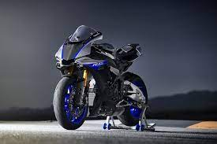
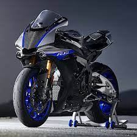

R HISTORY. YOUR FUTURE. WE R1.

MotoGP®-Derived Crossplane Crankshaft Engine

Superbike Brakes & Tires

Next Level R-Series Evolution
The R1M’s 998cc inline-four-cylinder engine features Yamaha’s exclusive crossplane crankshaft technology derived from Yamaha's YZR-M1 MotoGP® race bike. By equalizing inertial forces at the crankshaft, the CP4 motor delivers a direct feeling of linear torque, giving the rider the ultimate connection between throttle grip and the rear wheel
Yamaha
Call to action! It's time to get your first R1m
Call us for your first test ride